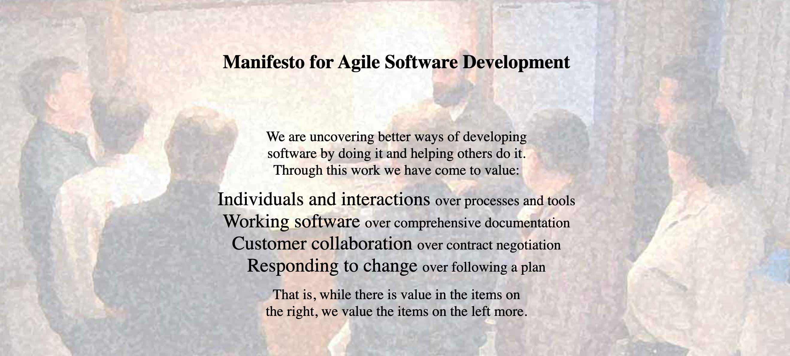

## 不同文化底下的敏捷 > 從「學徒制」到「國際化團隊」
### 經歷 - 畢業於伊利諾州香檳大學電腦科學系 - 曾任 - 美國軟體顧問公司 [8th Light](https://8thlight.com/) 工程師 - 新創公司 [Namely](https://www.namely.com/) 技術主管 - 美國軟體顧問公司 [8th Light](https://8thlight.com/) 紐約分行經理 - 法國銀行 [Societe Generale](https://www.societegenerale.com/en/home) 敏捷教練
### 我在盧安達開了家公司，但是我老婆快生了，你下個禮拜可以去趟非洲嗎？
### 盧安達在哪裡？
### 經歷歐洲殖民和種族屠殺浩劫，盧安達居然成為非洲版的新加坡？
### 兩個禮拜的新生訓練 - 工作協定 - 建立學習目標 - 定期自我評估
### [文化智商](https://cqcenter.com/) - 「個人主義」與「集體主義」 - 「高權力距離」與「低權力距離」 - 「不確定性規避」與「不確定性接受」 - 「合作」與「競爭」 - 「短期」與「長期」
### 文化智商 - 「高情境」與「低情境」 - 「狀態」與「施為」 - 「普遍主義」與「特殊主義」 - 「非表達」與「表達」 - 「共時性」與「歷時性」
### 學習目標 <div style="display: flex; justify-content: space-evenly;"> <div style="display: flex; flex-direction: column; text-align: left;"> <span>自動測試</span> <span>重構</span> <span>設計</span> <span>既有程式</span> <span>程式語言</span> <span>編輯工具</span> <span>資料庫</span> </div> <div style="display: flex; flex-direction: column; text-align: left;"> <span>閱讀技術文件</span> <span>敏捷</span> <span>溝通</span> <span>除錯</span> <span>架構</span> <span>演算法</span> <span>程式碼共有</span> </div> </div>
### 多元智能 <div style="display: flex; justify-content: space-evenly;"> <div style="display: flex; flex-direction: column; text-align: left;"> <span>語文</span> <span>數理邏輯</span> <span>空間</span> <span>肢體動覺</span> </div> <div style="display: flex; flex-direction: column; text-align: left;"> <span>音樂</span> <span>人際</span> <span>內省</span> <span>自然</span> </div> </div>
### 心流理論 <div style="display: flex; justify-content: center;"> <div style="display: flex; flex-direction: column; text-align: left;"> <span style="color: purple;">憂慮</span> <span style="color: red;">焦慮</span> <span style="color: orange;">興奮</span> <span style="color: yellow;">心流</span> </div> <div style="display: flex; flex-direction: column; text-align: left;"> <span style="color: green;">控制</span> <span style="color: olive;">放鬆</span> <span style="color: aqua;">無聊</span> <span style="color: blue;">冷漠</span> </div> </div>
### 六個小時時差的遠距離教學。
### 用看板紀錄自己的學習歷程，在日常生活中引進敏捷。
- 每天一次站立會議 - 每週一次衝刺規劃會議 - 每兩週一次回顧會議 - 每月至少一次自我評估 - 每天至少一個小時結對編程 - 每週至少一次實作體驗
### 態度：學習是我自己的事，導師只是幫忙引路。
### 敏捷宣言 
### 一個文化底下的敏捷 <img src="images/manifesto.jpeg" alt="manifesto" style="border: 0; background: transparent;"/>
### 多元文化底下的敏捷